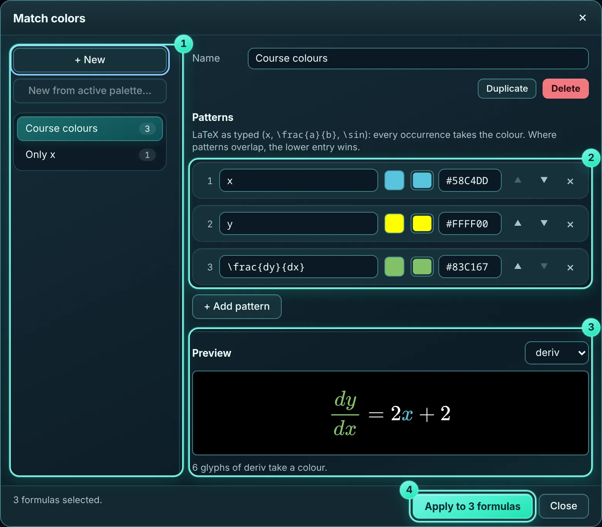
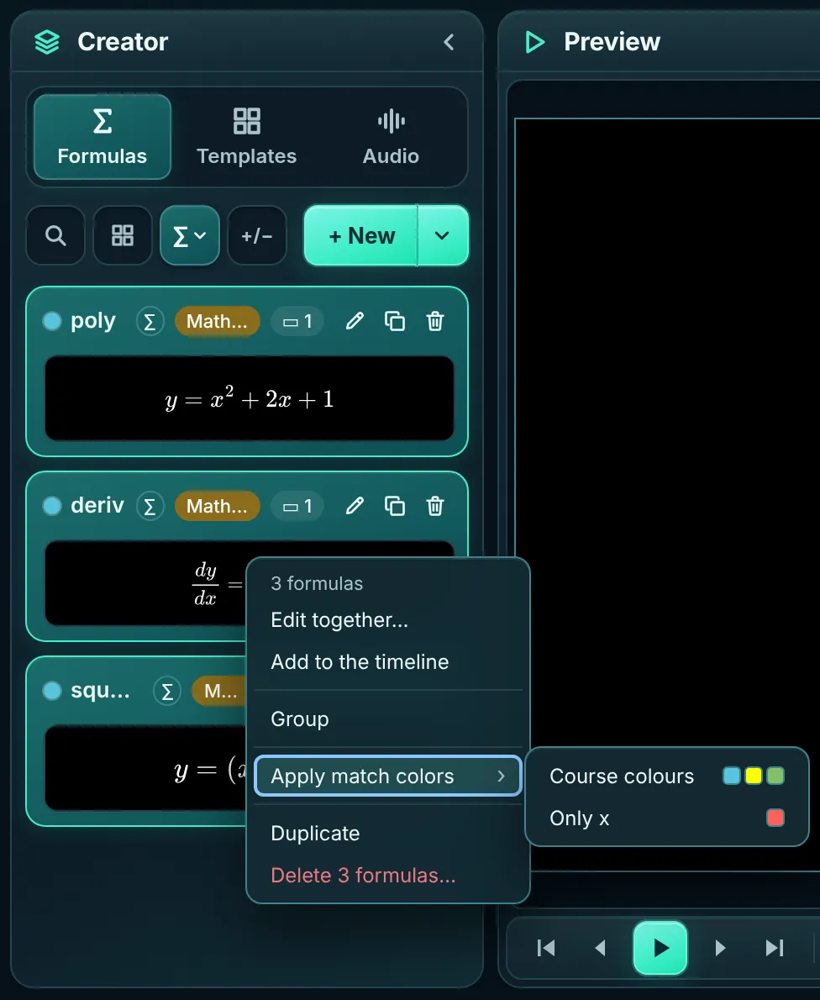
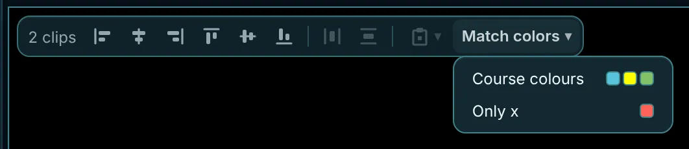
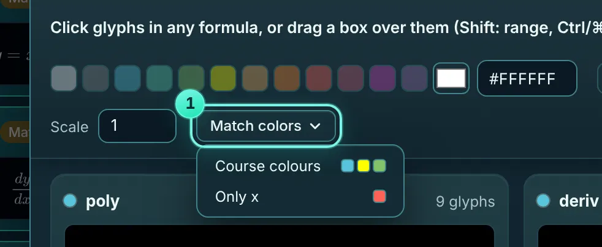
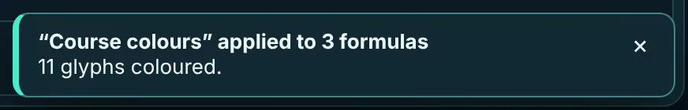

Match colors
A match list is a list of LaTeX patterns, each with a colour. Apply it to formulas and every occurrence of every pattern takes its colour, in all of them at once. It is the editor's version of Manim's tex_to_color_map.
Why a list
A derivation says the same letters again and again. Colouring glyphs by hand means picking each one, in each formula, and doing it again when you change a line. A list moves the work to the pattern: you say once that F is red, and every F of every formula you apply the list to is.
The list belongs to the project and is saved with it. A project can hold as many lists as you like, each with its own name.
Lists of patterns
Choose Edit ▸ Match colors ▸ Create match colors… to make a list; it opens in the Match colors dialog under the name Match colors 1. The same submenu lists the lists you have, and a click on one opens it for editing.

A list is a name and some entries. Each entry is a pattern and a colour:
- Type the pattern as you would in a formula:
x,\frac{dy}{dx},\sin. A pair of$…$around it is ignored. Enter or leaving the field commits it, and Esc takes the edit back. - Click the colour chip for the Manim colours and, with a palette active, its roles; or type a hex value or use the picker beside it.
- ▲ and ▼ move an entry, and × removes it. + Add pattern adds one at the end.
- Duplicate copies the list; Delete removes it, and you hold the button for a moment to confirm.
Every edit is one undo step, and Ctrl+Z works while the dialog is open.
The preview draws one formula of the project with the colours the list would give it, before anything is applied. Choose the formula in the menu above it. It says how many glyphs of that formula take a colour, or that no pattern occurs in it.
How a pattern matches
A pattern occurs wherever the formula's LaTeX repeats the pattern's, compared token by token. A token is a command (\frac, \sin, \,), a brace, or one other character. That gives the rules you need:
- Spaces do not count:
x yisxy. xis not found inside\xi, which is one token of its own.- A command and its arguments are matched as you write them:
\frac{dy}{dx}matches that fraction. A pattern that cuts a command from its arguments, such as\fracalone, cannot be coloured. \left(is one token. A delimiter cannot be coloured apart from its command, so a pattern takes\leftand\rightboth or neither.
For the line \frac{dy}{dx} = 2x + 2:
| Pattern | What it colours |
|---|---|
x | the x of dx and the x of 2x |
y | the y of dy |
2x | the 2 and the x of 2x together |
\frac{dy}{dx} | the whole fraction: its d, y, bar, d and x |
$x$ | the same as x |
An entry the app cannot match says why under its pattern: an empty pattern (Type some LaTeX.
), a row or column break (\\ or &), braces that do not balance, a \left without its \right. Such an entry is skipped.
When patterns overlap
Two patterns can claim the same glyphs: x and \frac{dy}{dx} both claim the x of dx. The lower entry wins. With the fraction last, the whole fraction is green. Move it up, and the fraction keeps only what no later entry claims: its y and its x take their own colours, nested inside it.
When an occurrence of one pattern only partly overlaps an occurrence of a lower one, it cannot be nested. It is dropped, and the preview names the pattern: Pattern 1 (“…”) overlaps a lower one here: the lower entry wins.
Applying a list
You apply a list to formulas: the formulas you select in the Creator, or the formulas of the clips you select in the Preview or on the timeline. Pick whichever you have at hand:
- In the Creator, select the formulas (Shift or Ctrl and click for several), right-click one and choose Apply match colors, then the list.
- In the Preview, right-click a clip and choose Apply match colors. On the timeline, do the same on several selected clips.
- With two or more clips selected, the bar in the corner of the Preview has Match colors ▾.
- In Edit together…, the Match colors button colours all of its formulas.
- In the dialog, Apply to 3 formulas does the same for the formulas selected behind it.
Each list in these menus shows its colours after its name, so you can tell lists apart without opening them.



Applying a list replaces the glyph colours of the formulas: they become exactly what the list says, and a glyph no pattern reaches goes back to the formula's colour. All the formulas change in one undo step. A notice says how many glyphs took a colour, and which formulas were left alone and why.

What a list leaves alone
- Objects without LaTeX. A Text (font) has colours glyph by glyph but no LaTeX to search; it keeps its colours, and the notice says so. A brace, a shape or a line has no glyph colours to set, so a list never changes one.
- Formulas that are not ready. A formula that has not been drawn yet, or whose glyphs changed while the colours were being worked out, is left alone and named in the notice.
- Patterns that cannot be drawn. A pattern that cuts through a macro's arguments cannot be told apart in the render; the notice says that the patterns cannot be rendered on that formula.
A list that starts from a palette
With a palette active, Edit ▸ Match colors ▸ New from active palette… makes a list of four rows, coloured with the palette's variable, constant, operator and result roles and with empty patterns for you to fill. Nothing is coloured until you write the patterns and apply the list. Palettes shows it.
What reaches Manim
The exported scene has no list and no patterns, only the colours they gave: each glyph carries a set_color with a plain hex value. Here is the Newton example as ManimCE writes it.
This second example is the one the dialog above shows: three lines of a derivation coloured by the list Course colours, where the fraction wins over the letters inside it.
Where to go next
- Colouring glyphs and objects covers colours by hand.
- Palettes by role names colours and starts a list from them.
- Finding and organizing selects formulas by kind, so a list reaches all of them.